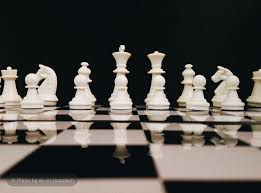

Learn the Pieces
Discover how every chess piece moves and learn how each piece contributes to a successful game.

Welcome to Project Checkmate, a website dedicated to helping new players learn and enjoy the game of chess. Chess is a strategic board game that challenges players to think ahead, solve problems, and make careful decisions.
Discover how every chess piece moves and learn how each piece contributes to a successful game.
Learn opening ideas, king safety, center control, and other important habits for beginning players.
Watch beginner-friendly tutorials that explain chess rules, piece movement, and basic strategies.
The purpose of this website is to teach the fundamentals of chess to beginners. It is designed for newcomers, hobbyists, and anyone interested in learning the rules of the game.
Visit Chess.com's beginner guide to learn more about basic chess rules and gameplay.